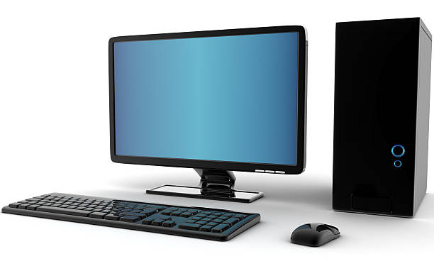
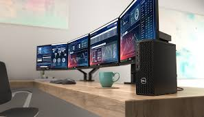
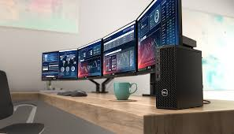

What is Computer ?

Computer is an electronic device that takes input, processes it according to given instructions, stores the data, and gives output. It can perform tasks like calculations, writing, drawing, playing videos, or connecting to the internet.
Basic Functions of a Computer:
Input – Accepts data (e.g., from a keyboard, mouse, touchscreen).
Processing – Uses a CPU (Central Processing Unit) to perform calculations and make decisions.
Storage – Saves data temporarily (RAM) or permanently (hard drives, SSDs).
Output – Shows results (e.g., on a monitor, speakers, printer).
Control – Coordinates all the above activities.
Characteristics Of Computer
1. Speed
A computer can perform millions of operations in just one second.
It works much faster than humans when it comes to calculations or processing data.
2. Accuracy
Computers are highly accurate.
They rarely make mistakes unless there is an error in the program or data.
3. Automation
Once programmed, a computer can work automatically without user intervention until the task is
complete.
4. Versatility
A computer can perform different types of tasks—writing, drawing, playing music, calculations,
internet browsing, programming, and more.
5. Diligence
Unlike humans, computers don’t get tired or bored.
They can work continuously for long hours without any drop in performance.
6. Storage
Computers can store large amounts of data permanently and retrieve it whenever needed.
They can hold everything from documents and videos to entire databases.
7. Multitasking
Computers can perform many tasks at the same time. For example, you can listen to music while
writing a document and downloading a file.
8. Reliability
Computers give consistent performance over time, making them very reliable for daily tasks and
complex operations.
Classification of Computer
 
Powerful & fastest computers. Used for: weather forecasting, scientific research, simulations (e.g., nuclear, space). Example: PARAM, IBM Summit.
2. Mainframe Computer
Large, powerful systems used by organizations for bulk data processing. Supports hundreds or thousands of users simultaneously. Used by: banks, airlines, government. Example: IBM Z series.
3. Minicomputer
Smaller than mainframes, but more powerful than PCs. Used in medium-sized businesses. Example: PDP-11, VAX.
4. Microcomputer (Personal Computer)
Most common type, used by individuals. Types include:
Desktop Laptop Tablet Smartphone Example: Dell Laptop, iMac, iPhone.
5. Workstation
High-performance PC for professionals (graphics, architecture, video editing).
More powerful than standard desktops.
Example: HP Z Series, Apple Mac Pro.
6. Embedded Computer
Built into other machines.
Performs specific control functions.
Found in: microwaves, cars, washing machines, ATMs.
Example: Microcontrollers inside smart appliances.
Components of Computer
1.Input devices
Input devices are hardware components used to send data or control signals into a computer or other electronic systems. They allow users or other systems to provide data and commands.
Keyboard:
The most common input device, it allows users to enter text, numbers, and commands into the computer by pressing keys.
Mouse:
A pointing device that controls the movement of the cursor on the screen, allowing users to interact with graphical elements, select, drag, and drop.
Microphone:
Captures sound waves and converts them into electrical signals that the computer can process (for voice commands, audio recording, or communication).
Scanner:
Converts physical documents or images into digital formats by capturing the visual data as pixels.
Webcam:
Captures live video input that can be processed or streamed.
Touchscreen (as input):
Allows users to interact directly with the display by touching it, often used in smartphones and tablets.
Game Controllers and Joysticks:
Specialized input devices designed for gaming to control movements and actions.
2. Output Devices
Output devices receive data from the computer and convert it into a form usable by humans or other systems. Their purpose is to display, print, or project the results of computer processing.
Monitor/Display:
Displays visual information as text, images, videos, and graphical interfaces.
Printer:
Converts digital documents and images into hardcopy printed on paper.
Speakers/Headphones:
Output audio signals, converting electrical signals into sound waves for music, voice, or system sounds.
Projector:
Projects visual output onto a large screen or surface, useful for presentations or entertainment.
LED Indicators:
Small lights that indicate the status of hardware or systems (e.g., power on/off, errors).
Haptic Devices:
Provide tactile feedback to users, often used in gaming controllers or touchscreens.
3. Input/Output (I/O) Devices
These devices can both send data to the computer (input) and receive data from the computer (output). They are essential in systems that require interaction or data transfer in both directions.
Touchscreen (as input/output):
Acts as a display (output) and a sensor for touch input simultaneously.
External Hard Drives / USB Flash Drives:
Can store data sent to them by the computer (output) and send stored data back to the computer (input).
Network Interface Cards (NICs):
Enable computers to send and receive data over networks (input and output of network packets).
Modems:
Convert digital data from the computer into signals that can travel over phone lines or cable (output) and convert incoming signals back into digital data (input).
Multifunction Printers (MFPs):
Combine printing (output), scanning (input), copying, and faxing.
Smartphones and Tablets:
Contain various sensors and output components to receive user inputs and display multimedia outputs.
CPU-Central Processing Unit

What is a CPU?
The Central Processing Unit (CPU) is a key hardware component in computers and many electronic devices. It processes instructions from programs, carrying out calculations and control operations.
How does a CPU work?
Fetch: The CPU gets (fetches) an instruction from the computer’s memory. Decode: It interprets what the instruction means. Execute: It performs the action—like calculating a number or moving data. Store: It saves the result back to memory or registers. This cycle repeats billions of times per second.
Components of a CPU
Arithmetic Logic Unit (ALU):
Performs mathematical operations (add, subtract, multiply) and logical operations (AND, OR, NOT).
Control Unit (CU):
Manages and directs the flow of data between the CPU, memory, and peripherals.
Registers:
Very fast, tiny storage locations inside the CPU holding data, instructions, or addresses temporarily during processing.
Cache:
Small but very fast memory close to the CPU cores to speed up access to frequently used data.
CPU Characteristics
Clock Speed:
Measured in gigahertz (GHz), it determines how many instruction cycles the CPU can perform per second.
Cores:
Modern CPUs have multiple cores (dual-core, quad-core, etc.). Each core can process instructions independently, improving multitasking and performance.
Threads:
Some CPUs can handle multiple threads per core, which helps with running multiple tasks simultaneously.
Types of CPUs
Desktop CPUs:
High-performance CPUs for personal computers.
Mobile CPUs:
Optimized for low power consumption in laptops, tablets, smartphones.
Server CPUs:
Designed for heavy workloads and reliability in data centers.
Why is the CPU important?
Without the CPU, your device can’t run software or respond to commands. It’s the central hub that processes all your programs, from your operating system to games and apps.
Memory and Storage Device
Memory (Primary Memory)
Definition: Memory in a computer usually refers to RAM (Random Access Memory).
Purpose: It temporarily stores data and instructions that the CPU needs while performing tasks.
Characteristics:
Volatile: Data is lost when the computer is turned off.
Fast: Much faster than storage devices.
Used for: Running programs, active processes, and quick access to data.
Storage Devices (Secondary Storage)
Definition: Devices used to store data permanently or long-term.
Examples:
Hard Disk Drive (HDD)
Solid State Drive (SSD)
USB Flash Drive
Optical Discs (CD/DVD)
Characteristics:
Non-volatile: Data stays even when the computer is off.
Slower than RAM: But stores much larger amounts of data.
Used for: Saving files, programs, OS, and data long-term.
Software System & Application
Software System
A software system is a broad term for a collection of programs, tools, and components that work together to perform complex tasks.
It includes operating systems, middleware, utilities, databases, and applications.
Examples:
Windows OS, Linux OS, database management systems (like MySQL), or an enterprise resource planning (ERP) system.
It provides the foundation and infrastructure for applications to run.
Usually complex, often involves multiple interacting parts.
Application (Application Software)
An application is a specific program designed to perform a particular task or group of tasks for the user.
Examples:
Microsoft Word, web browsers (Chrome, Firefox), games, photo editors.
Runs on top of the software system (usually the OS).
Focused on end-user needs.
Operating System
What is an Operating System (OS)?
An Operating System (OS) is software that acts as an interface between the computer hardware and the user. It manages the computer's hardware resources and provides services for computer programs.
Main Functions of an OS:
Process Management:
Manages running programs (processes), allowing multitasking, scheduling CPU time to different processes.
Memory Management:
Keeps track of each byte in a computer’s memory and allocates space to programs when needed.
File System Management:
Organizes files on storage devices (hard drives, SSDs), including saving, reading, and writing files.
Device Management:
Controls and manages input/output devices like keyboard, mouse, printers, etc., using device drivers.
Security and Access Control:
Protects data and resources from unauthorized access.
User Interface:
Provides a way for users to interact with the computer, either through command-line (CLI) or graphical user interface (GUI).
Examples of Operating Systems:
Windows (Microsoft)
macOS (Apple)
Linux (Open-source)
Android (Mobile OS)
iOS (Apple mobile OS)
Why is OS important?
Without an OS, you would have to communicate directly with the hardware, which is very complex.
It makes the computer easy to use and allows multiple programs to run smoothly.
Computer Security

What is Computer Security?
It means protecting computers and data from being stolen, damaged, or accessed by unauthorized people.
Common Threats
These include viruses, malware, phishing attacks (fake emails to steal info), and hackers trying to break into systems.
How to Protect Yourself
Use strong passwords, keep your software updated, and avoid clicking suspicious links or downloading unknown files.
Tools for Security
Firewalls block unwanted network traffic, antivirus software detects and removes harmful programs, and encryption keeps data private by coding it.
Importance of Backup and Recovery
Regularly saving copies of your data helps you restore it if something goes wrong, like a cyberattack or hardware failure.